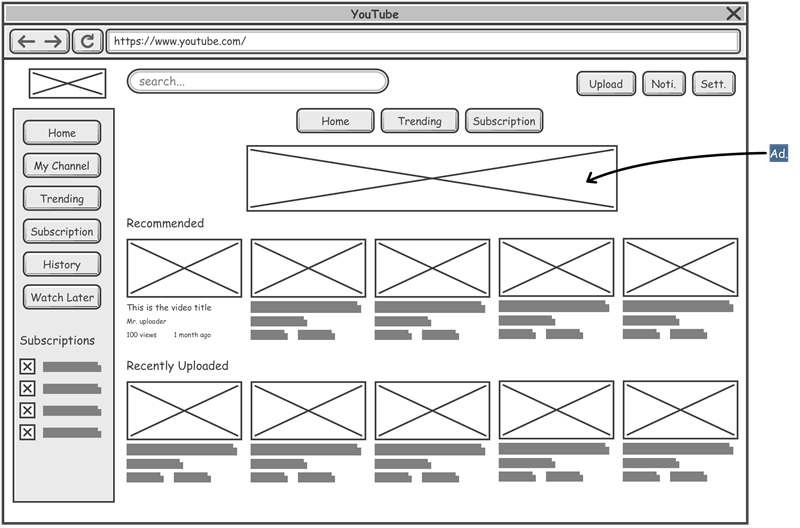

Purpose of a Wireframe
A wireframe is a visual diagram that outlines the structure and layout of a website, app, or other digital product. The purpose of a wireframe is to:
- Plan the Layout:
Wireframes help designers and developers plan the placement of elements like buttons, images, and text.
- Communicate functionality:
Wireframes show how users will interact with the product and how it's expected to work.
- Reduce trial and error:
Wireframes help teams work out issues before investing too much time or money into the project.
- Explore ideas:
Wireframes allow teams to explore different design approaches and aesthetics without writing code.
- Get feedback:
Wireframes can be shared with stakeholders for feedback and refinement.
Wireframes are created early in the design process and are often the first step in the development of a website or app. They are also known as page schematics or screen blueprints.
Read more

ReadMe Files
A README file is a text file that describes and launches a project. It comprises information that is frequently needed to grasp the scope of the project. In this blog, we will talk about what a README file is, why is it necessary.
What is a Readme file?
The Readme file is often the first file that the users read. It is a text file that contains information for the user about the software, project, code, or game, or it might contain instructions, help, or details about the patches or updates.
When you create a repository or a project, GitHub gives you the option of a default readme. The default readme file contains the repository name and some basic instructions. The file format is ‘md’, which stands for Markdown documentation. It is a lightweight markup language that can be easily converted to text.
Purpose of a Readme file
GitHub has become the platform where most open-source code is shared as the world is pushing more and more towards open-source projects and code. When sharing your code with the world, a problem that might occur is that they may not particularly understand how to use it or even understand it. So that is where the readme file helps. The readme file is used to explain what is uploaded and how we can install or use it. It even allows the uploader to add images and videos to help the reader navigate through the project. A well-written readme file is more important if you intend to show these projects in your resume. The interviewer might go to your project but might not understand a single piece of code. But if there is a readme file, it will help him/her understand better what the project is for, which coding languages/frameworks were used and how to navigate through that project. A good readme file for your project goes a long way in making an impression in your interview. An unsaid thing about readme files is that it even helps your future self. For example: If, for some reason, a bug was found a few months after you have left the project, and the company or the team asks you to fix it. You are completely out of touch and have no clue where to start looking. A readme file comes in handy in this scenario.
Read more

GIT Branch
In Git, a branch is a new/separate version of the main repository. Let's say you have a large project, and you need to update the design on it. How would that work without and with Git:
Without Git:
- Make copies of all the relevant files to avoid impacting the live version
- Start working with the design and find that code depend on code in other files, that also need to be changed!
- Make copies of the dependant files as well. Making sure that every file dependency references the correct file name
- EMERGENCY! There is an unrelated error somewhere else in the project that needs to be fixed ASAP!
- Save all your files, making a note of the names of the copies you were working on
- Work on the unrelated error and update the code to fix it
- Go back to the design, and finish the work there
- Copy the code or rename the files, so the updated design is on the live version
- (2 weeks later, you realize that the unrelated error was not fixed in the new design version because you copied the files before the fix)
With Git:
- With a new branch called new-design, edit the code directly without impacting the main branch
- EMERGENCY! There is an unrelated error somewhere else in the project that needs to be fixed ASAP!
- Create a new branch from the main project called small-error-fix
- Fix the unrelated error and merge the small-error-fix branch with the main branch
- You go back to the new-design branch, and finish the work there
- Merge the new-design branch with main (getting alerted to the small error fix that you were missing)
Branches allow you to work on different parts of a project without impacting the main branch. When the work is complete, a branch can be merged with the main project. You can even switch between branches and work on different projects without them interfering with each other.
Branching in Git is very lightweight and fast!
Read more